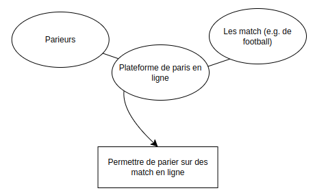

The Real Deal
Analyse conceptuelle par
GERARD Alexandre - POIRÉ Nicolas
____________________________________________
Sommaire
The Real Deal
Sommaire
Sujet
Expression du besoin
Milestones
Analyse du métier
Architecture technique
Stack technique
Architecture de la base de données
User Service
Bettors
Bookmakers
Betting Service
Books
Bets
Soccer Service
SoccerVenues
SoccerTeams
SoccerMatches
Architecture des différents services
UserService
SoccerService
BettingService
Définition du Context Mapping
Architecture des micro services
Fonctionnement
Inscription / Connexion des utilisateurs
Création d'une session de book
Ajout d'un pari
Sujet
Le but est de créer la plateforme de paris en ligne TRD. Nous allons procéder à un rapport d'analyse conceptuelle de telle sorte à pouvoir réaliser par la suite une première version viable minimale, en utilisant la méthode du Domain-Driven Design.
Expression du besoin

L'objectif est de faire une plateforme de paris basés sur le DDD. Des bookmarkers auront la possibilité de mettre en place une session de paris sur des matchs où les parieurs pourront miser afin de remporter ou non la mise.
Milestones
Nous avons commencé par séquencer la réalisation en plusieurs jalons:
- Le premier milestone est complété lorsque l’analyse du métier est réalisée (Ubiquitous Language).
- Le second milestone est complété quand l'architecture initiale (dite hexagonale) est réalisée et fonctionnelle.
- Le prochain milestone correspond à la fin du périmètre de ce projet: proposer via la plateforme un moyen aux utilisateurs de parier sur des matchs de Football (Serie A).
- Après ce goal accompli, une succession de correctifs pourra être étudiés pour être appliqués
- In fine, la plateforme pourra permettre de parier sur d'autres championnats / sports.
Analyse du métier
Tout d’abord il faut définir un dictionnaire de langage pour mieux comprendre le monde des paris.
- Côte: La côte représente la probabilité attribuée à un événement sportif et est utilisée pour calculer les gains potentiels d'un pari. Par exemple, une côte de 2,00 signifie que le parieur doublera son argent s'il gagne.
- Championnats (football): Différents types de championnats au football: Amical, Poule, 8ème de finale, quart de finale, demi-finale, finale, ...
- Mise: Le montant d'argent que le parieur décide de placer sur un pari donné. La mise est multipliée par la côte pour déterminer les gains potentiels.
- Bookmaker: Une entreprise qui accepte et gère les paris sur des événements sportifs. Dans ce cas, TRD agirait en tant que bookmaker sur sa plateforme de paris sportifs en ligne.
- Pari combiné: Un pari impliquant plusieurs sélections, où toutes les sélections doivent être correctes pour gagner. Les gains potentiels sont généralement plus élevés pour les paris combinés, mais le risque de perdre est également plus élevé.
- Intégrité des paris: Les mesures mises en place pour prévenir la manipulation des résultats sportifs et assurer l'équité des paris pour tous les parieurs.
Architecture technique
Stack technique
Architecture monolithique, docker, PHP Symfony avec API Platform qui va gérer du coup.
Architecture des différents services
Pour mieux définir les services nous avons mis en place des UML montrant les classes ainsi qu’entités et relations.
Les patterns tactiques du DDD sont aussi indiqués à l’aide des couleurs dans le diagramme.
En jaune sont représenté les Object Value.
En orange, les Entités.
Les classes en rouge représentent Manager de ces entités.
En vert ce sont les Ports (ici les Repository).
Enfin en bleu, les Adapters.
UserService
SoccerService
BettingService
Architecture de la base de données
Notre seconde étape est de réaliser la base de données du projet, ce qui va pouvoir nous donner, par la suite, l'architecture du projet.

User Service
Le service lié aux utilisateurs de la plateforme se décline en deux tables:
Bettors
Il s’agit de la table dédiée aux utilisateurs / parieurs de la plateforme:
- _id - ObjectId: Id du parieur.
- fullName - string: Nom / Prénom du parieur
- email - string: Adresse mail du parieur
- password - string: Mot de passe haché du parieur
- location - Location: Adresse / Ville / Pays du parieur. Le pays permet de savoir où le parieur se situe par rapport aux législations de paris dans son pays
- dateOfBirth - date: Date de naissance du parieur. Permet de connaître son âge afin d’avoir des informations légales à ce sujet
- betId - Bets._id: Historique des paris fait
Bookmakers
Il s’agit de la table dédiée aux bookmakers de la plateforme:
- _id - ObjectId: Id du bookmaker
- fullName - string: Nom / Prénom du bookmaker
- email - string: Adresse mail du bookmaker
- password - string: Mot de passe haché du bookmaker
- location - Location: Adresse / Ville / Pays du bookmaker. Le pays permet de savoir où le parieur se situe par rapport aux législations de paris dans son pays
Betting Service
Le service lié aux paris se divise en deux autres tables:
Books
Il s’agit de la table dédiée aux “books”: ce dernier va être créé par un bookmaker, ce qui permet de placer des paris par la suite sur cette sorte de session:
- _id - ObjectId: Id de la session de pari
- bookmakerId - Bookmakers._id: Id du bookmaker ayant créé cette session de paris
- matchId - SoccerMatches._id: Id du match lié à cette session de paris. On note que pour l’instant, il n’est que possible d’ajouter un id de match de football. Par la suite, et grâce à un préfixe sur l’identifiant (ex. sc_xxx pour le football), il sera possible de distinguer de quel type de jeu / sport / court / il est allusion
- odds - Odds: Côtes de la session définie à sa création par le bookmaker: cotes pour équipe à domicile, ext. et neutre (facultatif, s’il est possible d’avoir match nul)
- bookStatus - enum: Status de la session: Ouverte, Fermée, Annulée
Bets
Il s’agit de la table dédiée aux paris placés par les parieurs de la plateforme sur les sessions de la table précédente:
- _id - ObjectId: Id du pari
- wager - Wager[]: Mises du parieur: wager contient d’objets représentant un paris: ils contiennent tous un identifiant des sessions pariés, ainsi que la sélection du joueur (bet), la côte au moment du paris (odds), la mise du joueur (wage), le gain (gain) soit potentiel soit final en fonction du statut du wager (wagerStatus). Finalement, il s’agit d’un tableau car il permet au parieur de nonseulement faire un pari simple, mais aussi plusieurs paris simples, ou de créer un pari combiné (en fonction de betType)
- totalGain - number: Gain potentiel total si le statut des paris est WAITING / gain total final si le statut des pari est différent de WAITING
- betType - enum: Type de pari: Simple, Combiné
Soccer Service
Ce dernier service est un service créé uniquement pour le football. Si jamais la plateforme venait à s’étendre sur un autre sport / jeu / course, il serait possible d’avoir un service dédié comme celui-ci. Il y contient 3 tables:
SoccerVenues
SoccerVenues correspond au lieu du match et ses informations correspondantes, notamment:
- _id - ObjectId: Id du lieu
- venueName - string: Nom du lieu (ex. Stade Saint-Symphorien)
- location - Location: Adresse / Ville / Pays du lieu
SoccerTeams
SoccerTeams est la table correspondant aux équipes de football:
- _id - ObjectId: Id de l’équipe
- teamName - string: Nom de l’équipe (ex. FC. Metz)
- teamGroup - string: Groupe de l’équipe (ex. Ligue 1)
SoccerMatches
Cette dernière table recense tous les matchs de football:
- _id - ObjectId: Id du match avec prefix sc (ex. sc_eb0f7ccc-dcc4-4b10-87ea-e3369206976e)
- soccerTeam - [SoccerTeam, SoccerTeam]: Tableau contenant les informations sur les deux équipes comme l’id, le type d’équipe (ext./dom.) et le score
- venueId - SoccerVenues._id: Id du lieu de rencontre
- startDateTime - date: Date de début du match
- endDateTime - date: Date de fin du match
- playStage - enum: Type de rencontre: Amicale, Poule, Demi, Quart, Finale, ...
Définition du Context Mapping
Dans ce Context Mapping on constate que les corpses des métiers sont les bets. En découlent de ce domaine, 2 sous-domaines qui sont les users ainsi que les sports.
Architecture des micro services

Les couleurs utilisées pour le diagramme de classe sont aussi reprises avec les mêmes définitions.
Au début du projet, TRD aura 3 services, user / betting / soccer. Mais par la suite, si d’autres sports viennent à s’ajouter, il suffira de créer un autre service de sport. Ce système permet d’être plus générique et personnalisable. En effet, dans l’exemple du tennis (ou encore les sports athlétiques) les scores ne sont pas comptabilisés de la même manière. La logique du score est donc propre à son service.
Fonctionnement
Afin d'exprimer le fonctionnement de notre plateforme, nous avons explicité quelques cas d'utilisations, sous forme de diagrammes de séquence:
Inscription / Connexion des utilisateurs
Création d'une session de book
Ajout d'un pari